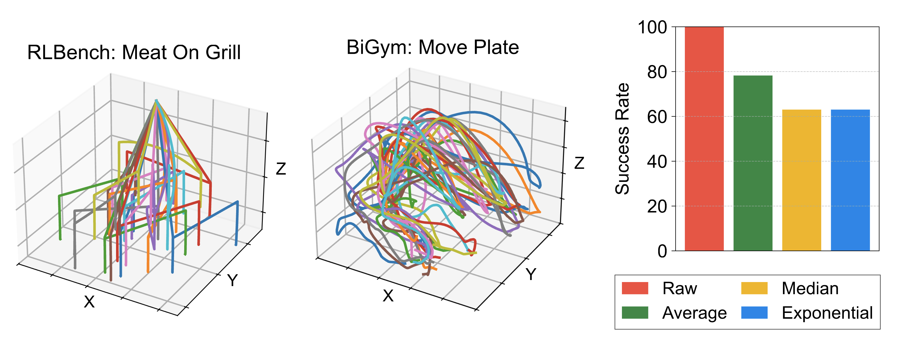

Abstract
In reinforcement learning (RL), we train a value function to understand the long-term consequence of executing a single action. However, the value of taking each action can be ambiguous in robotics as robot movements are typically the aggregate result of executing multiple small actions. Moreover, robotic training data often consists of noisy trajectories, in which each action is noisy but executing a series of actions results in a meaningful robot movement. This further makes it difficult for the value function to understand the effect of individual actions. To address this, we introduce Coarse-to-fine Q-Network with Action Sequence (CQN-AS), a novel value-based RL algorithm that learns a critic network that outputs Q-values over a sequence of actions, i.e., explicitly training the value function to learn the consequence of executing action sequences. We study our algorithm on 53 robotic tasks with sparse and dense rewards, as well as with and without demonstrations, from BiGym, HumanoidBench, and RLBench. We find that CQN-AS outperforms various baselines, in particular on humanoid control tasks.
Motivation: Noisy Robotic Trajectories

Robotic training data often consists of noisy trajectories, making it difficult to train value functions to understand the future consequence of taking each action. As a concrete example, we visualize the (x, y, z) coordinates of a gripper in demonstrations from RLBench that uses motion-planning for generating demonstrations and BiGym that provides human-collected demonstrations. One may think that this issue can be resolved by smoothing actions, but it often makes demonstrations be invalid by reducing action precision. For instance, in the right-most figure, we report the success rates of replaying BiGym demonstrations with various action smoothing schemes. We find that naive approach of smoothing actions can make demonstrations be invalid as smoothed actions often lose precision, highlighting the need for developing RL algorithms that can learn from noisy robotic training data.
Method Overview: Coarse-to-fine Q-Network with Action Sequence

We build our algorithm upon Coarse-to-fine Q-Network (CQN), a recent critic-only RL algorithm that solves continuous control tasks with discrete actions. (a) In CQN framework, we train RL agents to zoom-into the continuous action space by iterating the procedures of (i) discretizing the continuous action space into B bins and (ii) finding the bin with the highest Q-value to further discretize at the next level. We then use the last level's action sequence for controlling robots. CQN-AS extends this idea to action sequences by computing actions for all sequence steps k ∈ [1, ..., K] in parallel. (b) We train a critic network to output Q-values over a sequence of actions. We design our architecture to first obtain features for each sequence step and aggregate features from multiple sequence steps with a recurrent network. We then project these outputs into Q-values.
Experiments
Experimental Setup: Tasks

We study CQN-AS on 53 robotic tasks across various setups with sparse and dense rewards, and with or without demonstrations, spanning mobile bi-manual manipulation, whole-body control, and tabletop manipulation tasks from BiGym, HumanoidBench, and RLBench.
Experimental Results: Overview

CQN-AS achieves consistently outperforms various RL and BC baselines such as CQN, DrQ-v2+ (which is highly-optimized variant of DrQ-v2), SAC, and Action Chunking Transformer (ACT).